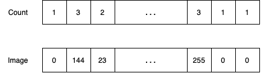
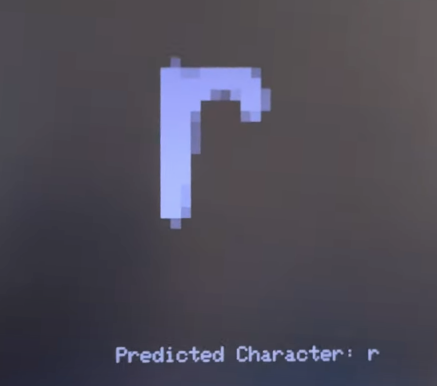
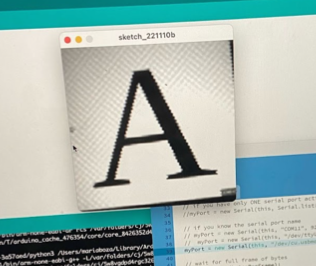
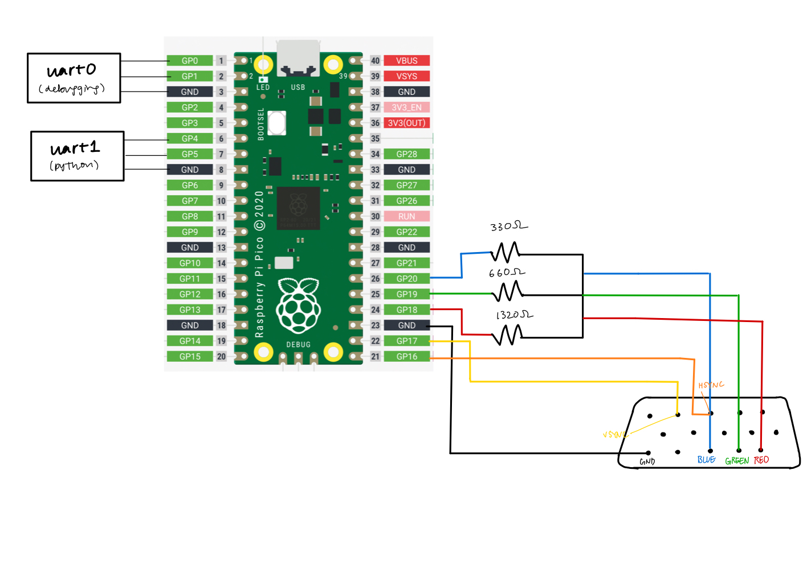
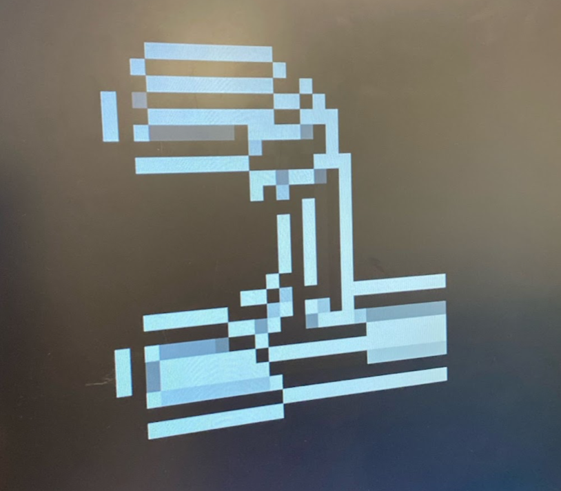
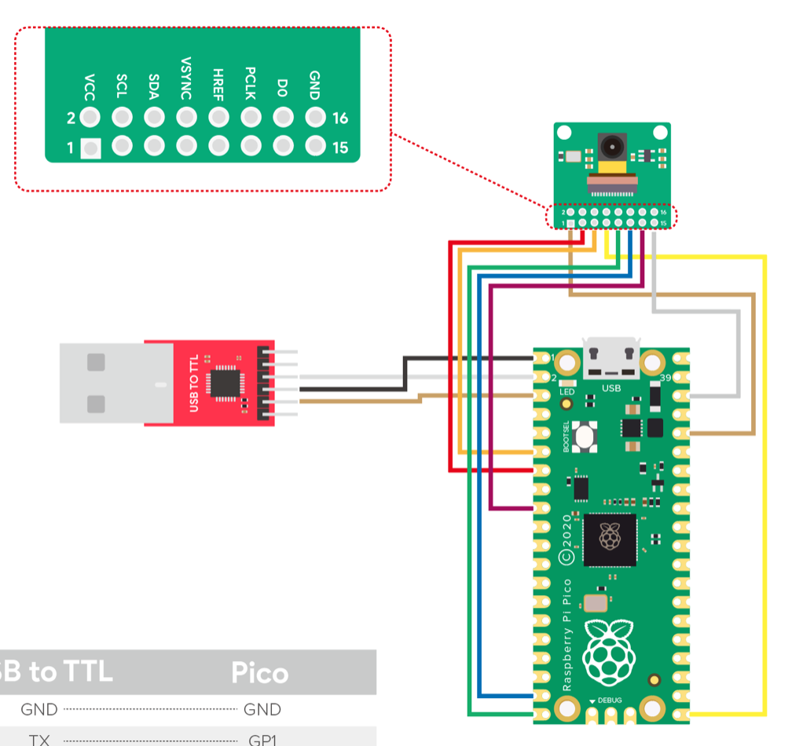

ECE 4760: Handwriting Recognition
Maria Boza, Anya Prabowo, Eshita Sangani
Project Introduction
Our project was to demonstrate handwriting detection using the Raspberry Pi Pico. There was a second part of the project that consisted of a camera being used to take pictures.
The project first starts off with the user writing a lowercase letter (character) on a paint application and converted into a .bmp file. This file is then compressed to a 28 by 28 array. After the compression, it will be run through a KNN algorithm to determine what letter was written to and then display it on the VGA screen.
The second part of our project was the camera module. We used the Arducam camera and a button to take a picture and display it on our computer screen.
High Level Design
As an overall overview, a paintbrush image is taken, sent via python serial in its according bit representation, which is then sent via python serial to the algorithm which is run on the Pico. After the algorithm identifies which letter the image was, it is displayed on the VGA via a decoder to ensure that it is seen in grey scale, with the result of the algorithm outputted on the screen.
Diving into the implementation, in order to classify the image received, we used KNN, a machine learning algorithm. KNN is a supervised machine learning algorithm that uses the euclidean distance to make predictions about what a data point is. At a high level, it finds the distance between the test point and all the examples in the training data set, selects the number of examples (K) which in our case was 5, and “votes” for the most frequent label in the case of classification. The better that metric reflects label similarity, the better the classified it will be.
To be able to detect what is being written, we need to train the model using a data set, for example, the EMNIST database which is a database of handwritten digits used for image recognition which are then converted into a 28x28 pixel image format. The EMNIST data set is available open source online, which was then appropriately parsed through to create training data files for each letter using Python. We chose to use python because processing the image on the Pico resulted in various conversion issues. We initially tried using an open source png library in C, libpng, that would allow the library to do the conversion on the pico itself. However, we were not able to integrate the library with CMake causing us to run into various compiling issues on the software side. It was also difficult sending an image serially and having the Pico do the conversion. Because of that, we ended up creating the training data on python and porting that over to be run on the Pico.
Program Design
Python
Before sending data to the Pico, we first wrote a Python script to take an image in a bitmap format, get the pixel data in a 28x28 array format, and send this data over via UART to the Pico. The integers need to be sent as characters as the Pico only receives characters using the uart_getc function. The integers were sent in a for loop over the 28x28 array obtained from the bitmap image. Because we use a compressed image, we want to be able to retain as much pixel information as possible, and retained the grayscale of the image (instead of a black and white image).
Initially, we had been taking images in 28x28 size, and getting the pixel data directly. However, it would be convenient for the user to be able to draw on a larger canvas and still obtain an image suitable for the algorithm. As a result, we wanted to be able to compress images of any size (but still of square dimensions) to get a 28x28 size image. In order to do this, we needed to resize the image from any larger sized image down to a 28x28 image using the resize function from the Python Pillow library that we also use to get the pixel data from bitmap images.
An issue we faced was the fact that the Pico would only receive one character at a time. When initially testing the system, this would work with numbers 0 - 9. However, for numbers with two or three digits (i.e. 74 or 138), these would be sent one digit at a time (i.e. 74 would be sent as a 7, then a 4). This was an issue as, on the Pico side, we would serially read over UART 784 times for each integer we expect to receive and now, we don’t have a fixed number of characters to receive since the value of each pixel is variable depending on the drawing. To combat this problem, we sent two sets of data: the number of characters per integer, and the integers themselves, as shown below:

This data would be alternatively sent, with count of index i being sent before image of index i. As a result, when the Pico receives this information, it can use the count data to determine how many uart_getc function calls it needs to read one integer from Python.
Pico
The Pico receives the data and reads both the count data and image data. For each count data, this is converted to an integer and for this integer value, we loop through to read each character of the image integer based on the count value.
Once we receive the entire array for an image, this is first displayed on the VGA screen to show the user the image they had just drawn. Each pixel from the image is a 10x10 rectangle on the VGA screen, and the value of the pixel color is split between one of the 6 possible greyscale values, based on its range from 0 - 255. After this is displayed, the array is used in the knn algorithm.
The knn algorithm has 2 main functions: the update function, and the vote function. The update function loops through each training data (100 images per character) and determines the k smallest euclidean distances between our input image and each character in our training set. Once this array is achieved, the vote function will determine which are the k smallest distances, and which character corresponds to the majority of these smallest distances. This is what is printed as the “Predicted Character” on the VGA display.

Camera
Most of the camera code was obtained from this repo. The main program sets up the camera, GPIO pins and UART, before calling the thread that gets the image and sends it via UART to the Processing application that displays it. Modification was made to pause the camera output when the button is held down, and to the CMake files to ensure that we could integrate the class protothread header files, which can be found in the code snippet section.

Hardware Design
Raspberry Pi Pico / RP2040
The RP2040 is a high-performance microcontroller device with interfaces such as GPIO, ADC, and SPI flash. It is responsible for flashing our programs in conjunction with the different peripheral devices.
USB Serial Port
The serial port is connected to the Raspberry Pi Pico that outputs values to an external computer. It was used to receive user input of the .bmp file.
Video Graphics Array (VGA)
The VGA is a display that is used to display the compression array in greyscale as well as what the algorithm has determined to be the letter. The VGA runs with 6 pins: VSYNC, HSYNC, BLUE, GREEN, RED, and Ground. Once the writing image goes through compression and the pico determines what letter it is, then it will display the image of the handwriting as well as what the algorithm determines the letter is.
Decoder
To be able to have a grey scale on the VGA we created a decoder to send in the same voltage to all the red green blue pins. The decoder consisted of 3 different resistors that were connected in series with each other and output the voltage value to the VGA screen. The reason why we wanted a grey scale was because all of our images are black and white but when we compress the image to a smaller one that the algorithm uses we wanted to show the compression in a grey scale.

Before we had implemented the decoder, the image displayed in this form, where we tried using RGB values but it outputted unexpected colors instead, as shown below.

Camera
The pinout is shown below, and the camera uses I2C to commmunicate with the Pico.

Results
The final result of our design was that we were able to create a handwriting recognition program with the Pico. We were also able to display both the compression array as well as the predicted value that the algorithm has determined. Although we weren't able to combine both the camera as well as the algorithm code we were able to make them work separately. Going back to the algorithm there were able to make all of the lowercase letters get detected correctly whenever the drawings were nicely done. Other times, the algorithm would not detect the letter we were wanting to write. One other thing that we were able to get working were digits 0 to 9 since these were a lot smaller testing data we were able to train the algorithm a lot more. You can see this in (#4) schematic. Due to limitations given the size of the memory in the Pico, we decide to stick with only lowercase letters to show the capabilities of the RP2040. Finally, our demo was able to demonstrate the functionality of going from a large picture to a smaller compression and running through the algorithm for twenty-six letters in the alphabet. We believe that this project has demonstrated how powerful the Raspberry Pi Pico is given a very small and inexpensive chip. It also demonstrated that we are able to use this algorithm to be able to translate written text like notes we take to type up notes for our convenience. Even though we weren't able to fully integrate the camera it has opened up doors to integrate the camera with other programs in the future and be able to use the data received for future research and integration of the camera for other projects.
Conclusions
Beginning from the planning stages of our project, we initially wanted to implement a text to speech project, in which we would write down a letter, word, or phrase and be able to detect what is being written down from the image and convert that to speech based on an open source training data set using a camera. Because of the added hardware complexity, we decided to work on the camera and pico algorithm with the training in parallel. The knn algorithm was obtained from ECE 5775 Lab 2 , and the group made the necessary modifications to run it on the Pico. Next time, we would want to divide up our project into more elements so we can spend more time integrating everything together. We underestimated how long the integration of all the components would take, especially considering the flash and RAM memory constraints which ended up being the bottleneck of our project. However, we were able to get a MVP project without the camera element, which was a great end result!
Code
Digitrec
Python
CMake
Arducam
Work Distribution
The group worked together for the most part to debug the system and talk through issues faced. The knn algorithm was obtained from ECE 5775 Lab 2, and the group made the necessary modifications to run it on the Pico. Eshita worked on formatting the training data to fit the array format needed to be used in the knn algorithm. Maria and Eshita worked on initially setting up the camera with Arduino. Maria worked on the decoder for the greyscale VGA display. Anya worked on serially sending data from Python to the Pico, worked on getting the camera running through CMake, and created the website.